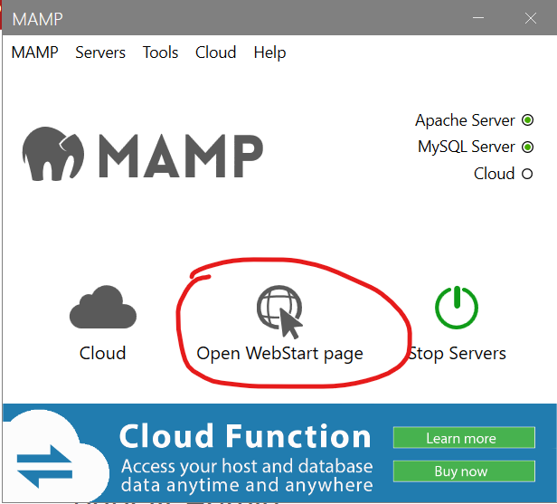

You do not need to install MAMP PRO or Apple Bonjour.

Accept the license agreement.
Install at the default folder location.
Leave the default for the shortcut as well.
Check the box if you want a desktop icon.
Confirm the settings, and then click Install.
Click Finish once the installation process has completed.
